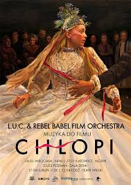
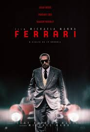
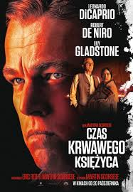
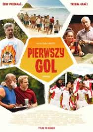

[KINO🎬]

"Chłopi" - reżyseria: DK Welchman, Hugh Welchman

"Chłopi" - reżyseria: Michael Mann

"Czas krawawego księżyca" - reżyseria: Martin Scorsese

"Pierwszy gol" - reżyseria: Taika Waititi
"Pieśni wielorybów" - reżyseria: Jean-Albert Lievre

"Napoleon" - reżyseria: Ridley Scott